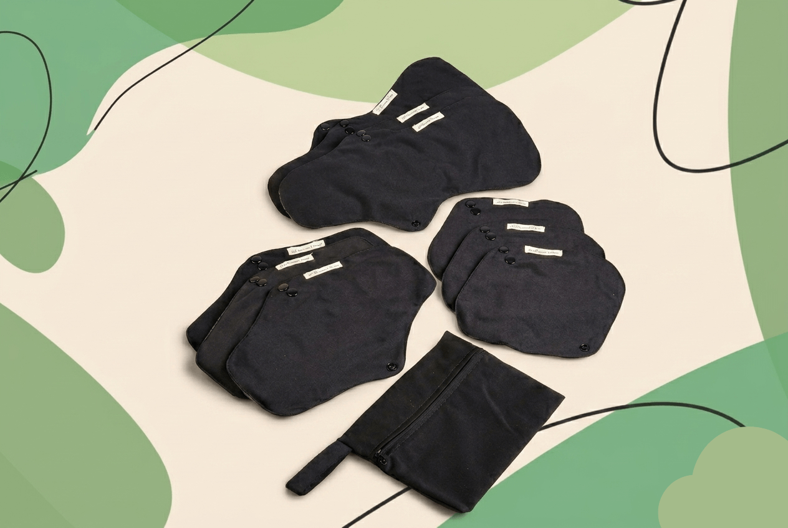
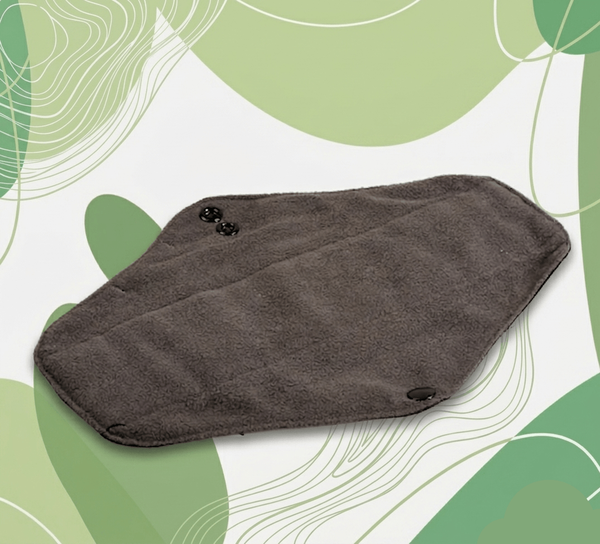
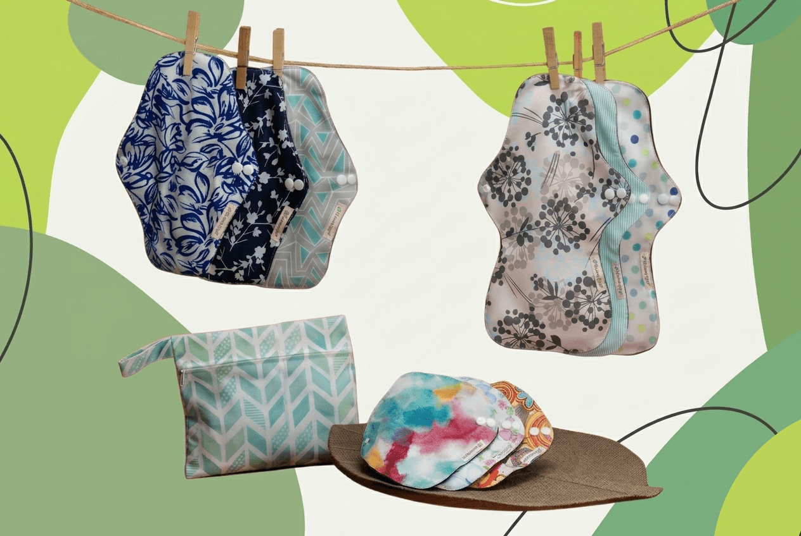
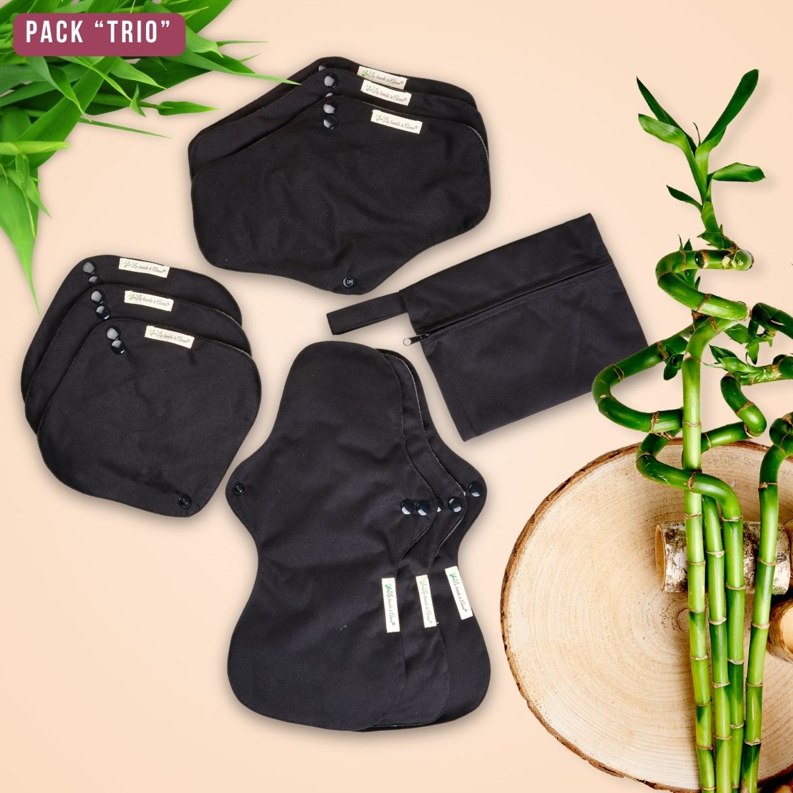

1. Un pad se change dehors sans retirer son pantalon, ses collants ou ses chaussures
Une culotte menstruelle peut être pratique chez soi. Mais au bureau, à l’école ou dans des toilettes publiques, la changer oblige à retirer tout le bas puis à transporter la culotte utilisée. Ce qui semblait simple devient vite une opération que l’on repousse.
Avec un pad La Bande à Anna, tu gardes ta culotte : tu déclipses la protection, tu la replies et tu la ranges dans la pochette hermétique fournie. Les deux boutons-pression permettent de changer uniquement ce qui doit l’être, puis de reprendre ta journée.

2. Trois formats couvrent les flux légers, normaux et abondants, de jour comme de nuit
Ton flux change pendant le cycle. Une protection trop légère entretient la peur de la fuite, tandis qu’un modèle surdimensionné devient inutilement encombrant. Le problème vient souvent du fait que l’on demande à une seule protection de tout faire.
Le Pack Trio réunit 3 pads Liberté de 20 cm, 3 Indispensable de 26 cm et 3 Tranquillité de 33 cm. La face intérieure absorbe le flux et la couche extérieure en PUL forme une barrière imperméable et souple : tu choisis le bon format au bon moment.

3. Le charbon de bambou offre une face douce et respirante, et les PFAS recherchés n’ont pas été détectés
Une protection reste plusieurs heures contre une zone sensible. Quand la matière gratte, colle ou accentue la sensation d’humidité, l’inconfort finit par occuper toute la journée. La composition compte donc autant que l’absorption.
Les pads associent 80 % de fibres de charbon de bambou côté peau à 20 % de PUL côté extérieur. Cette combinaison apporte une face douce et respirante avec une barrière souple et imperméable. Les analyses de SGS France indiquent que les PFAS recherchés n’ont pas été détectés.
Voir les informations de composition Découvrir le Pack Trio
4. Lavables et réutilisables 2 à 8 ans, les pads évitent de racheter des protections chaque mois
Une protection jetable semble peu chère à l’unité, mais il faut recommencer l’achat à chaque cycle. Une alternative réutilisable n’est réellement économique que si le lavage, le séchage et la rotation restent faciles au quotidien.
Les pads se rincent à l’eau froide, passent en machine à 40 °C avec le reste du linge puis sèchent à l’air libre. Selon l’usage et l’entretien, La Bande à Anna indique une durée de vie de 2 à 8 ans, voire plus. Les 9 pads du Pack Trio permettent d’organiser une rotation sans attendre chaque lavage.
Voir le Pack Trio à 65 €
5. Le Pack Trio se teste pendant 60 jours avec une garantie « satisfaite ou remboursée »
Le vrai frein n’est pas toujours le prix. C’est la peur d’acheter une protection inhabituelle qui finira au fond du placard parce que la sensation, la taille ou la routine ne convient pas.
Le Pack Trio est noté 4,81/5 sur la base de 142 avis produit, mais l’avis décisif reste le tien. La garantie d’initiation couvre ton premier achat pendant 60 jours afin que tu puisses essayer les trois formats pendant de vrais jours de cycle.
Consulter les modalités de la garantie Essayer le Pack Trio pendant 60 jours